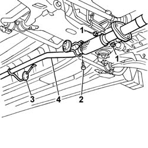
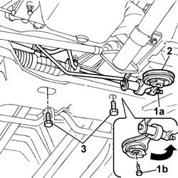
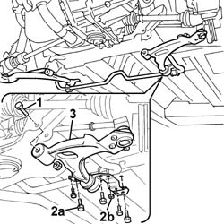
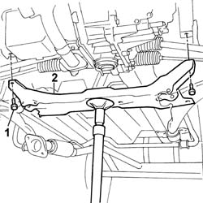
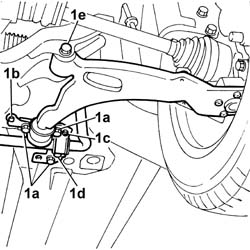

4410D13 front suspension beam - r r
- Path
- Procedures > 44 SUSPENSION AND WHEELS > 4410 FRONT SUSPENSION > 4410D frame and cross beam > 4410D13 front suspension beam - r r
- Kind
- repair procedure (removal / refitting; the operation number is the code)
- Applies to
- all engines; all production periods
- Interactive page
- https://sloeber94.github.io/elrnDB-fDbl/en/#/2584745
Applies to: all engines; all production periods
 Removing
Removing
 Refitting
RefittingPosition the vehicle on a lift and raise it.
Op. 4450B12 FRONT WHEELS (TWO) - R.R..
Op. 7055B54 PROTECTION/GUARD UNDER ENGINE - R.R..
1. Remove the nuts securing the first section of the exhaust pipe to the rear section.
2. Undo the bolt securing the exhaust pipe flexible block support bracket.
3. Disconnect the flexible block supporting the rear section of the exhaust pipe.
4. Lower the rear section of the exhaust pipe and secure to the car using a rope.

Applies to: all engines; all production periods
1. Loosen nut (1a) and unscrew bolt (1b) securing the central reaction link.
2. Turn the central link so that it is outside the working area.
3. Undo the bolts securing the power assisted steering box to the front beam.

Applies to: all engines; all production periods
1. Undo the front bolt securing the wishbone (right and left) to the front beam.
2. Undo bolts (2a) and (2b) securing the rear of the wishbone and antiroll bar to the body (work on the right and left sides).
3. Move the wishbones away from the working area.

Applies to: all engines; all production periods
Prepare a hydraulic jack under the front beam.
1. Undo the side bolts securing the beam to the body.
2. Lower the hydraulic jack and remove the front beam.

Applies to: all engines; all production periods
Refitting
Removing.
Position the beam on the hydraulic column jack.
Raise the jack and offer the crossmember up to the attachments on the bodyshell.
Screw in the side bolts securing the beam to the body and tighten (firstly position the fastening on the timing side).
 | Fastening | Component | Ø | Value (daNm) |
|---|---|---|---|---|
- | - | - | - | - |
Screw in the bolts and nut securing the rear of the wishbone and antiroll bar without tightening.
Screw in the bolt securing the front of the wishbone without tightening.
Secure the steering box to the front beam and tighten the retaining bolts.
| Fastening | Component | Ø | Value (daNm) |
|---|---|---|---|---|
- | Nut | POWER STEERING BOX | M12 x 1.25 | 8.8 |
Reposition the central power unit link and tighten the central bolt and retaining nut to torque.
| Fastening | Component | Ø | Value (daNm) |
|---|---|---|---|---|
- | Nut | REACTION ROD | M12 x 1.25 | 8 |
| Fastening | Component | Ø | Value (daNm) |
|---|---|---|---|---|
- | Bolt | REACTION ROD | M12 x 1.25 | 12 |
Fasten the rear exhaust pipe section to the flexible block.
Connect the first section of the exhaust pipe.
Secure the first section of the exhaust pipe to the support bracket on the front beam.
| Fastening | Component | Ø | Value (daNm) |
|---|---|---|---|---|
- | Bolt | EXHAUST PIPE MOUNTS/FASTENERS | M8 | (on crossmember) 2.8 |
Op. 4450B12 FRONT WHEELS (TWO) - R.R..
Carry out final tightening of the wishbone and antiroll bar fastenings under theoretical design load conditions Design load conditions on the front axle are achieved by ballasting the car (carry out this operation with the wheels fitted and the car on the ground or an appropriate lift). To do this, place 70 kg loads on the car floor in the areas in front of the right and left front seats. Then use a torque wrench to tighten the following bolts.
1. Tighten the bolts (1a) and (1b) securing the rear of the wishbone and beam to the body; tighten nut (1c) and bolt (1d) securing the antiroll bar to the body to the specified torque; tighten bolt (1e) securing the front of the wishbone to the beam to torque.
| Fastening | Component | Ø | Value (daNm) |
|---|---|---|---|---|
1a | Bolt | FRONT SUSPENSION LOWER LEVER | M12 x 1.25 | (rear) 12.5 |
| Fastening | Component | Ø | Value (daNm) |
|---|---|---|---|---|
1b | Bolt | FRONT SUSPENSION LOWER LEVER | M6 | (rear) 0.8 |
| Fastening | Component | Ø | Value (daNm) |
|---|---|---|---|---|
1c | Nut | FRONT ANTI-ROLL BAR | M6 | (rear) 0.8 |
| Fastening | Component | Ø | Value (daNm) |
|---|---|---|---|---|
1d | Bolt | FRONT ANTI-ROLL BAR | M10 x 1.25 | (rear) 7 |
| Fastening | Component | Ø | Value (daNm) |
|---|---|---|---|---|
1e | Nut | FRONT SUSPENSION LOWER LEVER | M12 x 1.25 | (front) 12.5 |

Applies to: all engines; all production periods
Op. 7055B54 PROTECTION/GUARD UNDER ENGINE - R.R..
Op. 4450A10 FRONT WHEEL GEOMETRY - CHECK USING OPTICAL EQUIPMENT - INCLUDES ADJUSTMENT IF NECESSARY.
Topics linked from this page (3)
- 4450A10 front wheel geometry - check using optical equipment - includes front wheel tow-in adjustment if necessary
- 4450B12 front or rear wheels (two) - r+r
- 7055B54 under-engine guard - r r